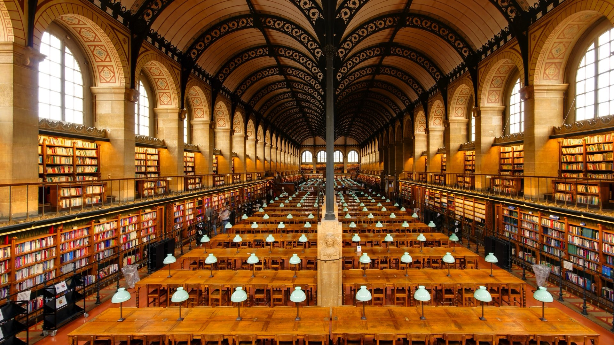
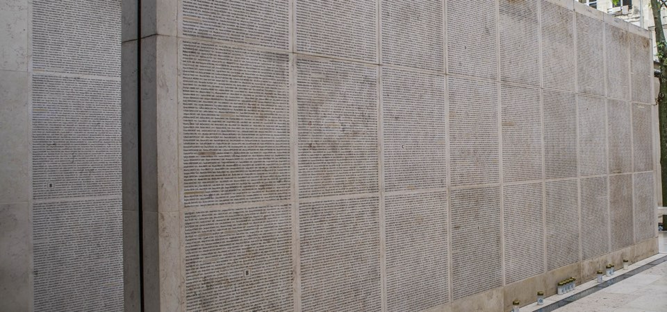

عکس: تالار مطالعهٔ کتابخانهٔ سنت-ژنویو، پاریس · Marie-Lan Nguyen · CC BY 2.0 FR، برشخورده، از ویکیمدیا کامنز
کتایون مطلوبی

مدرس تاریخکالج واشتناو
پژوهشگر، پروژهٔ تاریخ فراگیردانشگاه میشیگان–دیربورن
پژوهشگرمؤسسهٔ هداسا–برندایس، دانشگاه برندایس
Katayoun Matloubi
مدرس تاریخ در کالج واشتناو و پژوهشگر پروژهٔ تاریخ فراگیر در دانشگاه میشیگان–دیربورن هستم و در مؤسسهٔ هداسا–برندایس دانشگاه برندایس نیز بهعنوان پژوهشگر همکاری دارم. در سال ۲۰۲۵ دکترای ادبیات معاصر فرانسه و مطالعات فرانکوفون را از دانشگاه کنتیکت گرفتم و گواهی تحصیلات تکمیلی در حقوق بشر را نیز از همین دانشگاه دریافت کردم.
محور اصلی پژوهشهای من شیوههای غیرمستقیم بازنمایی هولوکاست است. در پژوهشهایم به نقش سکوت و غیاب در ادبیات و سینما، تاریخ یهودیان ایران و پناهجویانی که از ایران عبور کردهاند، و دگرگونی روایتهای شاهدان در فرایند ترجمه میپردازم. کتاب من، The Rhetoric of Obliquity، آنا لانگفوس، نویسندهٔ یهودی لهستانیتبار، بازماندهٔ هولوکاست و برندهٔ جایزهٔ گنکور، را هم پدیدآورندهٔ شیوهای از روایت غیرمستقیم و هم نخستین منتقد جدی آن میداند و همین پرسشها را در سینمای هولوکاست، از آلن رنه و کلود لانزمان تا جاناتان گلیزر، دنبال میکند.
در پژوهشهایم از منابع فرانسوی و فارسی، ترجمه، روشهای تاریخ شفاهی و تجربهٔ آموزش در موزه بهره میبرم. مقالهٔ «The Persistence of the Void» در سال ۲۰۲۶ با دسترسی آزاد در نشریهٔ Holocaust Studies منتشر شد، و پژوهشهایم با حمایت موزهٔ یادبود هولوکاست آمریکا، بنیاد شوآی دانشگاه کالیفرنیای جنوبی، مؤسسهٔ هداسا–برندایس و مؤسسهٔ تابستانی فراآتلانتیک دانشگاه مینهسوتا انجام شده است. به ترکی آذربایجانی، فارسی، فرانسوی، انگلیسی و ترکی عثمانی کار میکنم و متون عربی را میخوانم.
سه پرسش، یک روش

بازنمایی و حافظهٔ هولوکاست
سکوت، غیاب و بیان غیرمستقیم در ادبیات فرانسویزبان و سینمای هولوکاست، از آنا لانگفوس تا «منطقهٔ مورد علاقه».
بیشتر بخوانید
تاریخ یهودیان ایران
یهودیان ایران و پناهجویانی که از ایران عبور کردند، و دانشجویی یهودی ایرانی در طبقهبندیهای اداری فرانسهٔ ویشی، ۱۹۴۱–۱۹۴۴.
بیشتر بخوانید
شهادت و ترجمه در زبانهای مختلف
شهادت در گذر میان فارسی، فرانسوی و انگلیسی چگونه دگرگون میشود، و ترجمهٔ انسانی یا ماشینی چه چیزی را بیصدا هموار میکند یا از دست میدهد.
بیشتر بخوانیدتصاویر از ویکیمدیا کامنز: دیوار نامها، یادمان شوآ (Ninaraas، CC BY 4.0) · آرامگاه استر و مردخای، همدان (Adam Jones، CC BY-SA 2.0) · شاهنامهٔ فلورانس، ۱۲۱۷ م (مالکیت عمومی). برشخورده.
Holocaust Studies
The Persistence of the Void: Formal Absence in Holocaust Representation from Langfus to Ida
این مقاله این دیدگاه را نقد میکند که پرهیز از نمایش مستقیم خشونت همواره رویکردی اخلاقی است. رمانهای آنا لانگفوس و فیلمهای «شوآ»، «پسر شائول» و «ایدا» را همسنگ و یکسان نمیخوانم؛ هر اثر نقش متفاوتی در تبارشناسیِ میانجیگری در بازنمایی هولوکاست دارد.
نسخهٔ بازنگریشدهٔ مقالهٔ «Knowing Non-Knowledge» به نشریهٔ Memory Studies ارسال شد.
مقالهٔ «The Persistence of the Void» بهصورت برخط و با دسترسی آزاد در نشریهٔ Holocaust Studies منتشر شد.
تدریس درس HST 109، «جهان در عصر جدید آغازین»، در کالج واشتناو.
شرکت در کارگاه بینالمللی پژوهشی گلمن در موزهٔ یادبود هولوکاست آمریکا و پژوهش در تالار مطالعهٔ مرکز شاپل.
موزهٔ یادبود هولوکاست آمریکامؤسسهٔ هداسا–برندایسبنیاد شوآی دانشگاه کالیفرنیای جنوبیمؤسسهٔ تابستانی فراآتلانتیک، دانشگاه مینهسوتامرکز حقوق بشر داد